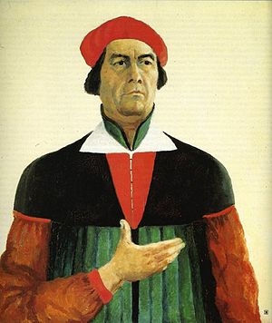
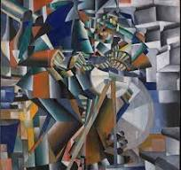

Kazimir Malevich (1879-1935) foi um pintor russo e um dos pioneiros da arte abstrata. Ele é conhecido como o fundador do movimento Suprematismo, que foca na abstração geométrica e na eliminação de qualquer referência ao mundo real. Sua obra mais famosa, "Quadrado Negro", é uma das representações mais icônicas da arte abstrata e simboliza a pureza da forma e da cor.
Maiores Obras:

Quadrado Negro

Princípio do Brilho

Composição Suprematista